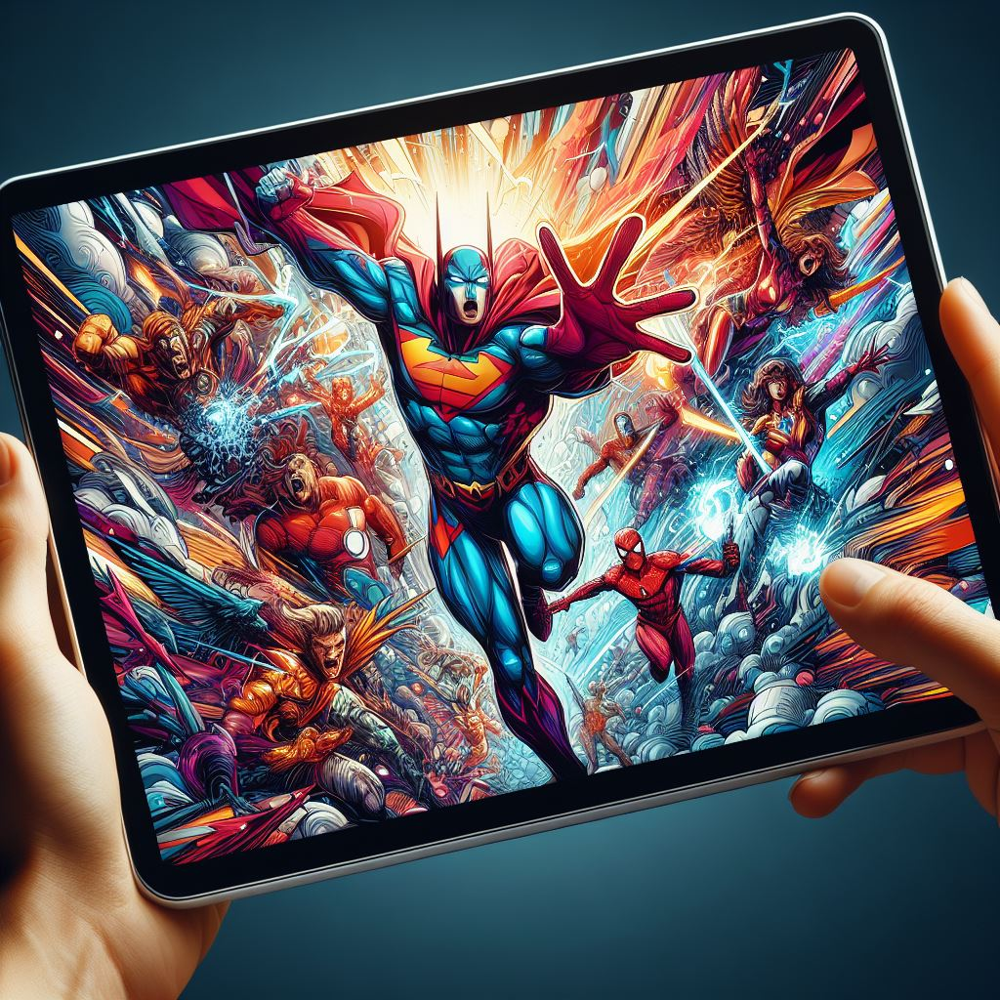

{kind=link}

I would never recommend buying a tablet as I think it's a strict downgrade from a laptop and less flexible than a smartphone. A tablet can make sense if you mostly consume content (reading, video, browsing) on the couch or while traveling, want a cheap shared device for kids, or need a large touch or pen surface, e.g. for drawing or handwritten notes. If you buy one, these are the things you might want to have a look at:
| Name | Xiaomi Pad 6 | Xiaomi Redmi Pad SE | Samsung Galaxy Tab A9+ | Huawei MatePad | Amazon Fire Max 11 | Lenovo Tab M10 Plus (3. Gen) |
|---|---|---|---|---|---|---|
| Price | 350€ | 220€ | 290€ | 362€ | 315€ | 160€ |
| RAM | 8 GB | 4 GB / 8 GB | 4 GB / 8 GB | 8 GB | 4 GB | 4 GB |
| Built-in storage | 256 GB | 256 GB | 128 GB | 128 GB | 128 GB | 64 GB |
| Expandable Storage | ✗ | microSD | microSD | ✗ | microSD | microSD |
| CPU | Snapdragon 870 | Snapdragon SD 680 | Snapdragon 695 5G | Snapdragon 7 Gen 1 | Octa-core processor | Snapdragon SDM680 |
| Operating System (OS) | Android 13 | Android 13 | Android 13 | Android 12 | ? | Android 13 |
| Display Size | 11" | 11" | 11" | 11.5" | 11" | 10.6" |
| Resolution | 2880 × 1800 Pixels | 1920 × 1200 Pixels | 1920 × 1200 Pixels | 2200 × 1440 Pixels | 2000 × 1200 Pixels | 2000 × 1200 |
| Battery | 8840mAh | 8000 mAh | 7040 mAh | 7700 mAh | 7500 mAh | 7500 mAh |
| Audio-Jack | ✗ | 3.5mm | 3.5mm | ✗ | ✗ | 3.5mm |
| Bluetooth | 5.2 | 5.0 | 5.1 | 5.2 | 5.3 | 5.0 |
| Fingerprint Sensor | ✗ | ✗ | TODO | ✗ | ✅ | ✗ |
| GNSS (GPS) | ✗ | ✗ | GPS | ✗ | ✗ | GPS (L1), Galileo (E1), Beidou, GLONASS |
| Case / Front (IP-Certification) | Corning Gorilla Glass 3 | Alu-Unibody | TODO | Alu-Unibody | TODO | TODO |
| Reviews | Xiaomi Pad 6 | Xiaomi Redmi Pad SE | Samsung Galaxy Tab A9+ | Huawei MatePad 11.5 | Fire Max 11 | Lenovo Tab M10 Plus 2022 (Gen 3) |
Use Cases
- Watch TV: You want a big screen. Brightness might be relevant as well. The speakers likely don't matter so much as you will likely use headphones anyway.
- Read comics: You want a big screen.
- Read books: Smaller is nicer. I guess about 7 inches. See ebook readers - if you only want to read books, that is best.
More
Tech:
- Differences in Bluetooth versions (German)